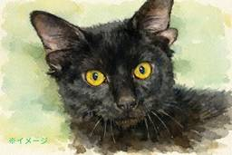

ナゾロジー
https://nazology.kusuguru.co.jp
身近に潜む科学現象から、ちょっと難しい最先端の研究まで、その原理や面白さを分かりやすく伝えられるようにニュースを発信していきます。最新の科学技術やおもしろ実験、不思議な生き物を通して、もう一度、皆さんの心にナゾを解き明かす「ワクワクの火」を灯したいと思っています。
フィード
ビーバーが「炭素削減」の秘密兵器になる可能性
ナゾロジー
川辺にせっせとダムを作るビーバー。 その姿はどこか愛らしく、のどかな自然の象徴のようにも見えます。 しかし、英バーミンガム大学（University of Birmingham）の最新研究で、この小さな「建築家」が、地球規模の問題である気候変動に関わる重要な役割を担っている可能性が明らかになりました。 ビーバーが作る湿地は単なる生息地ではなく、大量の炭素を閉じ込める「天然の貯蔵庫」として機能するというのです。 もしこの効果が広い地域で再現されるなら、ビーバーは「炭素削減の秘密兵器」として、私たちの気候対策に新たな選択肢をもたらすかもしれません。 研究の詳細は2026年3月18日付で科学雑誌『Communications Earth & Environment』に掲載されています。
4時間前

「4つの耳」をもつ黒猫が保護される【動画あり】
ナゾロジー
全身が真っ黒な黒猫は、それだけで独特の魅力があります。 しかし今回注目を集めた黒猫は、さらに唯一無二の特徴を持っていました。 アメリカで保護された子猫「ドビー」は、4つの耳を持つ非常に珍しい猫で、その不思議な姿が大きな話題を呼んでいます。 しかも注目された理由は見た目の珍しさだけではありません。 追加の耳そのものは健康上の問題を起こしておらず、必要なのは別の治療だったのです。
4時間前
ストレスが溜まると「道に迷いやすくなる」と判明
ナゾロジー
街中を歩いていて「あれ、今どこだっけ？」と、居場所がよくわからなくなった経験はありませんか？ 特に、その経験が最近多くなったという人は、ストレスが溜まっているのかもしれません。 独ルール大学ボーフム（RUB）の最新研究で、ストレスが高まると人は道に迷いやすくなることが明らかになりました。 その原因は一体何なのでしょうか？ 研究の詳細は2026年3月12日付で学術誌『PLOS Biology』に掲載されています。
9時間前
恋愛での「無関心」が”かなり危険”な理由とは？ 1
1
ナゾロジー
「自分の恋人は、あまり怒らないし、干渉もしてこない。自由にさせてくれるし、居心地がいい」 そんな関係を、理想的だと感じている人は少なくないでしょう。 ケンカも少なく、衝突もない。穏やかで安定した関係に見えます。 しかし、その“穏やかさ”は本当に安心できるものなのでしょうか。 もし相手が、あなたに対して強い好意も不満も抱いていないとしたら、それは単なる優しさではなく、「無関心」という別の状態かもしれません。 オランダの自由大学アムステルダム校（VU）の研究チームは、恋人に対してポジティブな感情もネガティブな感情もほとんど抱かない「無関心」が、関係の質や本人の心の状態とどう結びつくのかを調べました。 研究では、複数の調査と3年間の追跡データを使って、この状態が関係満足度の低下や抑うつ傾向などと関連することが示されています。 詳細は、2026年1月8日付の学『Personality and S…
9時間前
「眼鏡は魅力を下げるのか？」あるタイプの眼鏡だけ魅力が上がる 4
ナゾロジー
眼鏡は一般的に魅力を下げるアイテムと認識されており、眼鏡を避けるためにコンタクトレンズを利用する人も多く存在します。 ただ、世の中には根強い眼鏡っこ好きも存在しています。 では、眼鏡が魅力に与える影響は、きちんと調査するとどういう結果になるのでしょうか？ オーストリア、ウィーン大学のヘルムット・レーダー氏（Helmut Leder）らの研究チームは、顔の印象に眼鏡が与える影響を検討し、この疑問に対する答えを報告しています。 この研究では、参加者に、同一人物の眼鏡なし、眼鏡あり、フレームレス眼鏡の顔写真を見てもらい、その魅力度や知的さ、信頼性などを評価してもらいました。 その結果、眼鏡を掛けていると魅力度は低下したと評価されるが、代わりに知的で、成功しているように見えると評価されることが確認されました。 やはり眼鏡は魅力を下げるデバフアイテムなのでしょうか？ ただし研究チームは、縁なし眼鏡…
18時間前
白亜紀の海で「大型捕食者に噛みついた巨大魚」の化石を発見
ナゾロジー
「海の大型捕食者」と聞くと、他の生物に襲われることはほとんどない、絶対的な強者を思い浮かべるかもしれません。 ところが約8000万年前の白亜紀の海では、その常識が通用しなかった可能性が明らかになりました。 なんと、海の頂点に君臨していたはずの大型首長竜の首に、別の巨大魚の歯が深々と突き刺さった状態の化石が見つかったのです。 研究の詳細はテネシー大学（The University of Tennessee）により、2026年3月12日付で科学雑誌『Journal of Vertebrate Paleontology』に掲載されています。
19時間前
「女性の涙」には男性の攻撃性を鎮める匂い成分が含まれている 4
ナゾロジー
女性の涙には男の怒りを鎮める作用があったようです。 イスラエル・ワイツマン科学研究所（WIS）の23年の研究で、女性が流した涙の匂いを嗅ぐと、生理食塩水を嗅いだときに比べて、男性の攻撃性が40%以上も低下するという興味深い結果が報告されています。 実際、磁気共鳴機能画像法（fMRI）を使った脳スキャンでも、女性の涙を嗅いだときに攻撃性に関わる脳領域の活動が減ったという。 ただ、涙は無臭ですがそれでも涙に含まれる化学成分はヒトに影響を及ぼしているようです。 これは涙が単に目を守るためだけの存在ではない可能性を示しています。 研究の詳細は、2023年12月21日付で科学雑誌『PLOS Biology』に掲載されています。
1日前
溺れた子供の命を救う「人工呼吸」が減っている
ナゾロジー
子供たちにとって海や川で遊ぶことは楽しいことです。 しかし時には、ほんの一瞬の油断が深刻な事故につながることもあります。 親や周囲の大人たちは、どんなことを心得ておくべきでしょうか。 岡山大学の研究グループは、溺れた子どもの心停止に対して市民がどのような蘇生を行ってきたのかを、日本全国のデータを使って調べました。 その結果、本来重要とされる人工呼吸を含む心肺蘇生が年々減り、代わって胸骨圧迫のみの蘇生が増えていることが分かりました。 さらに、胸骨圧迫のみの蘇生は、人工呼吸を含む蘇生に比べて、30日以内の死亡や脳の状態が悪くなることと関連していました。 本研究は2026年3月10日、学術誌『Resuscitation』に掲載されました。
1日前
容姿が人生の満足度に与える影響は、女性よりも男性の方が大きいと判明 1
ナゾロジー
なんとなく見た目を気にするのは女性で、男性は適当にしている、という印象を抱く人は多いかもしれません。 しかし朝、鏡の前で髪型を整えたり、念入りにスキンケアをしたりする男性は珍しくありません。 現代の日本でも男性向けコスメ市場が急成長しているように、こうした「見た目への投資」は何も女性だけのものではありません。 一般的に「美人は人生のイージーモード」などと言われるように、容姿の恩恵をより強く受けるのは女性であるというイメージを抱きがちですが、実は社会科学の最新の研究は、こうした私たちの思い込みとは異なる事実を示しています。 チェコ共和国にあるチェコ科学アカデミー社会学研究所（Institute of Sociology, Czech Academy of Sciences）のマイケル・L・スミス（Michael L. Smith）博士らの研究チームは、容姿の良さが人生の満足度にどのような影…
1日前
「自殺を考える人」は血中に検出可能な変化があり、しかもその成分は男女で違う 230
ナゾロジー
自殺の認識が変わるかもしれません。 23年に米国のカリフォルニア大学（UC）で行われた研究によって、男女で異なる5つの化合物の血液濃度を測定するだけで、自殺念慮の高い人を90%以上の精度で特定できることが示されました。 また研究では男女共通の自殺念慮の因子として「ミトコンドリアの機能低下」を示す化合物も特定されました。 ミトコンドリアは細胞内のエネルギー生産工場として機能しているだけでなく、脳と体の間の信号を調整する「ミトコンドリア情報処理システム（MIPS）」の中枢を担っており、機能不全は全身の細胞に大きな悪影響を及ぼすと考えられています。 このことから研究者たちは、プレスリリースにて「自殺未遂は実際には、細胞レベルで耐えられなくなったストレスを（死によって）止めようとする、より大きな生理学的衝動の可能性がある」との仮説を提唱しています。 研究内容の詳細は2023年12月15日に『Tr…
2日前